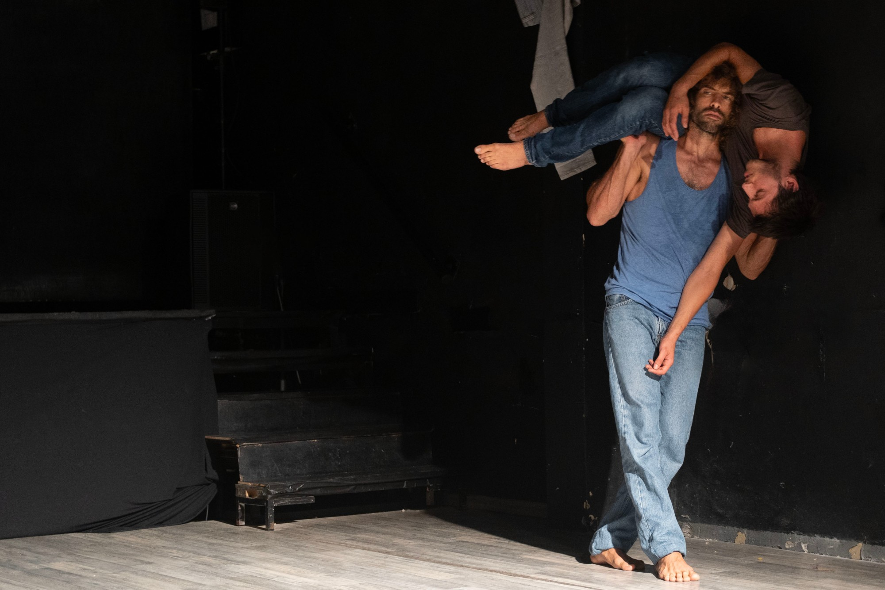
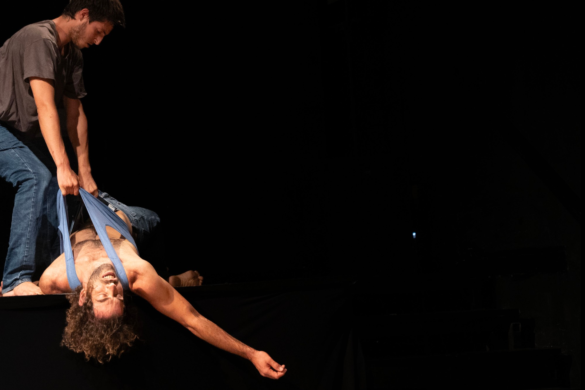
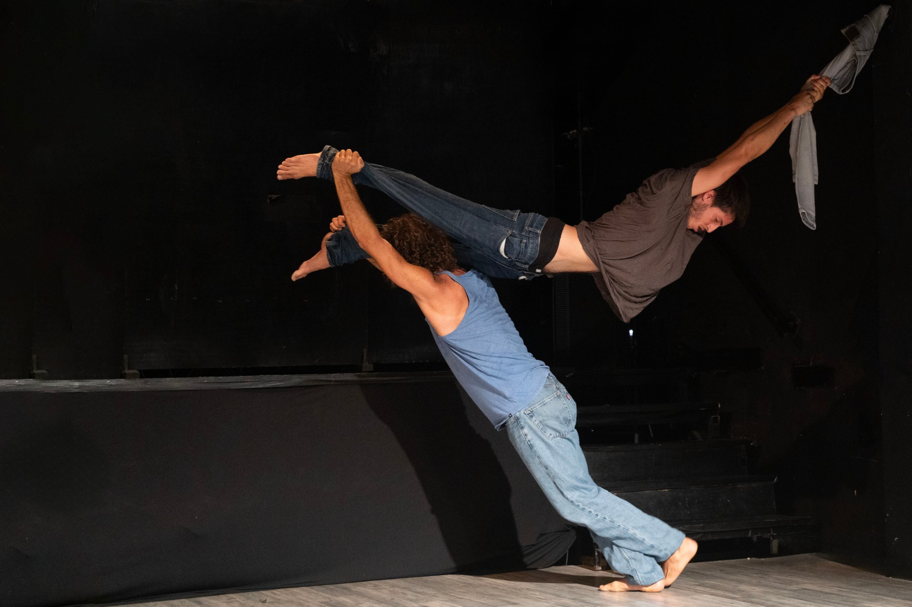
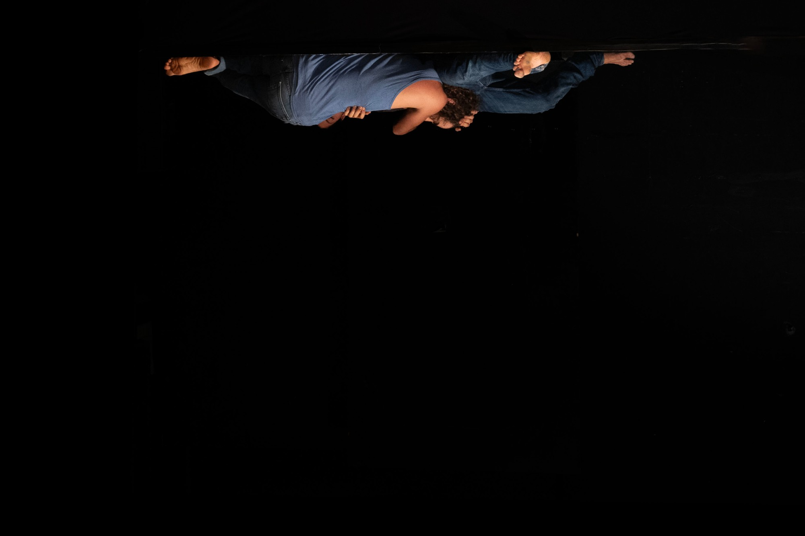
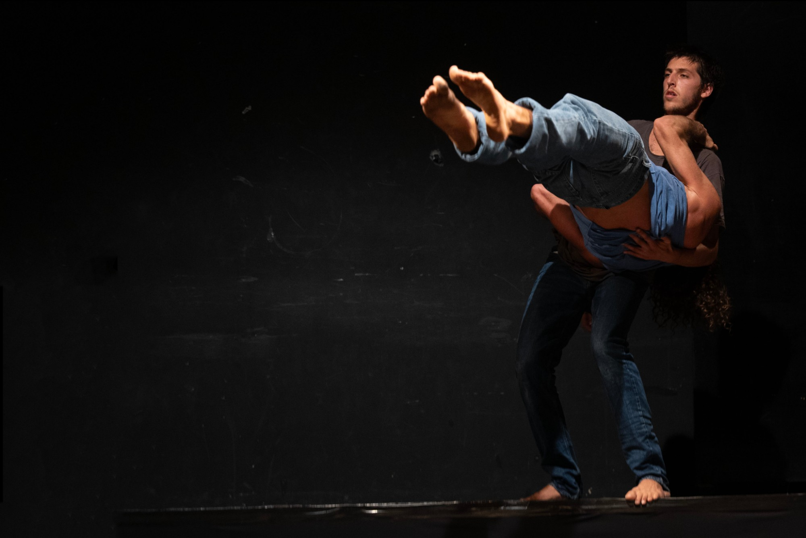

Stage
Menkind
A duet between two men, searching for stability within moments of collapse — between longing, fragility and strength.

Teaser
A physical and emotional connection between two bodies that move around each other, into each other, and at times — against each other.
A duet in which straight lines wither, slip, and collapse into the structure of the other's body. Between flowing softness and quiet strength.
A space where power is not merely raw masculine force, but also a longing to be held, carried, leaned upon.
The search for touch, for responsiveness, for weight — weaves a dance.
The piece explores the boundaries of intimacy between two men, in a search for stability within moments of collapse.
Longing alongside withering, fragility, and surrender.
Stills




Credits
Concept & choreography
Talia Barda
Dancers
Nadav Sharon & Teo Yoav Birenboim
Premiere
AS IS, Stage — Center TLV
Artistic guidance
Or Marin
Light design
Maxim
Photography
Or Marin, Tomer Harubi & Dan Ben Ari
Video
Ofir Ben Shimon
Developed with the support of a residency at Stage — Center TLV. Selected for the Tmuna Festival, 2025.